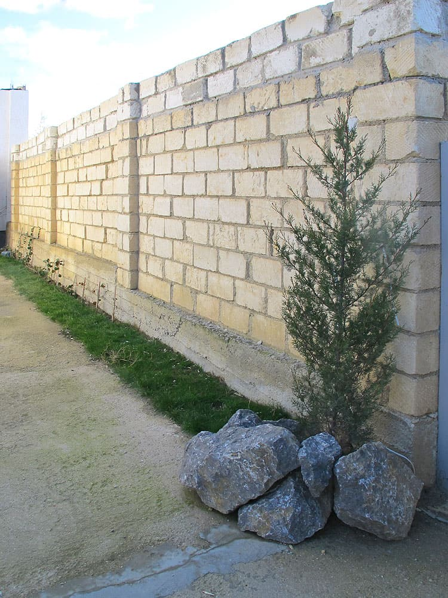

Помимо активного отдыха мы предлагаем Вам отдохнуть в живописном месте подножия горы Ай Георгий вдали от так привычной нам городской суеты.

Удивительные горные пейзажи открываются со всех окон гостевого дома. О горах Судака говорят следующее: «характер пейзажа таков, что, точно это вершины величайших Альп, лишь на время лишившихся своего снегового савана, а кругозор дает полную иллюзию того, что под ногами «весь мир».
Уникальное расположение гостевого дома, который окружен со всех сторон горными массивами, позволит Вам каждый день наслаждаться ароматом горных можжевельников, лавандовых полей, соцветием горных трав приправленный морскими нотками черного моря.
Каждая комната нашего гостевого дома это воплощение городского комфорта с привычными для всех нас удобствами, включающие в себя санузел, кондиционер, спутниковое телевидение, зону Wi-Fi, удобные кровати и домашний уют.
На территории гостевого дома можно пожарить мясо и овощи на огне в удобном мангале, а после посидеть в беседке в компании друзей.
От аэропорта или ж/д вокзала г.Симферополь до нас 100 км, от ж/д вокзала Феодосии 45 км. Мы встретим Вас и довезем до места. До моря можно дойти пешком, но мы рекомендуем самый чистый пляж Крыма – Меганом Бухты Капсель.
Берег Капселя преимущественно каменистый, местами встречаются бухточки из песка. Преобладание каменного скалистого дна, отразилось на чистоте морской воды - море в Капселе всегда кристально чистое!
Чистая вода моря привлекает сюда аквалангистов, дайверов, любителей плавания в маске. Наличие песочных пляжей, особенно "Лягушатника" - (пляж из мелкого кварцевого песка, дно пологое, очень мелкое и песочное, без единого камушка) привлекает сюда отдыхающих с детьми. Хочу заметить, что детский пляж "Лягушатник" содержат в достойном виде работники бывшей фермы мидий.
Вход на детский пляж свободный, но если приобрести в лавке пляжа напиток, или арендовать лежак – будет и Ваш вклад на содержание этого пляжа.
Арендуя жилье в Судаке, многие туристы приезжают на капсельские пляжи, особенно удобно тем отдыхающим, которые приехали на отдых в Судак своим транспортом.
Стоянка Вашего автомобиля на территории гостевого дома бесплатна.